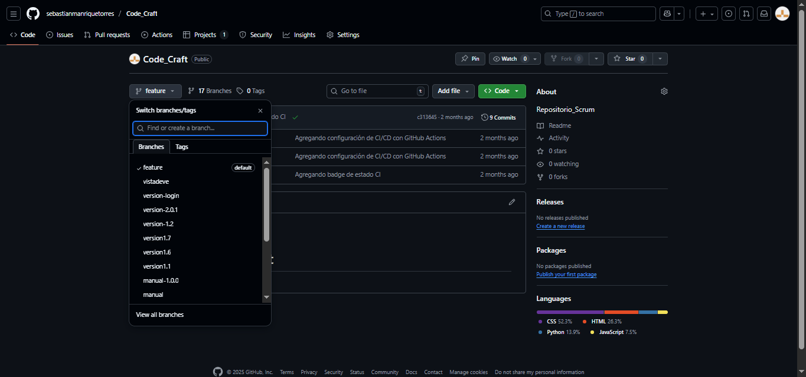
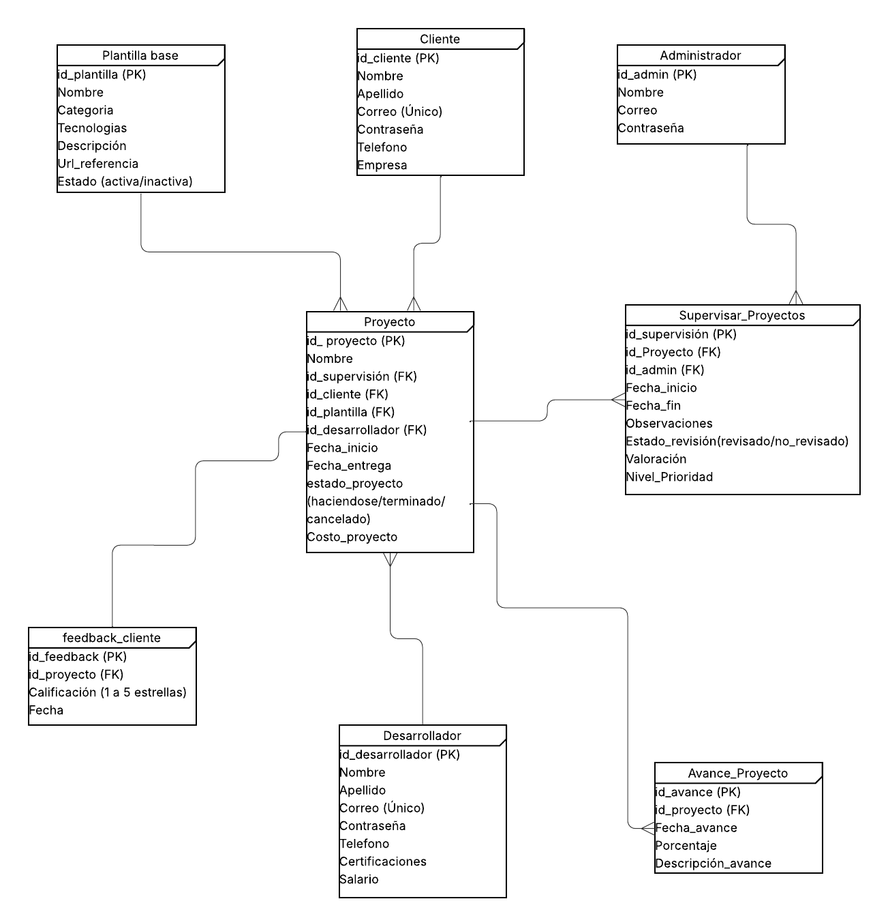

6. Desarrollo Técnico¶
El desarrollo del proyecto Code_Craft se llevó a cabo aplicando buenas prácticas de ingeniería de software, asegurando calidad, escalabilidad y mantenibilidad del código.
A continuación, se describe la arquitectura técnica, herramientas, y tecnologías empleadas.
Arquitectura General¶
El sistema sigue una arquitectura Cliente-Servidor con separación clara entre las capas de presentación, negocio y datos.
{kind=link}

Componentes principales:
Frontend: React.js + TailwindCSS
Backend: Node.js + Express.js
Base de datos: PostgreSQL
API REST: Comunicación mediante JSON
Autenticación: JWT (JSON Web Tokens)
Despliegue: GitHub Pages (Frontend) y Render/Heroku (Backend)
Estructura del Proyecto¶
CODE_CRAFT-MANUAL/
│
├── .venv/ # Entorno virtual de Python para Sphinx
│
├── docs/ # Documentación del proyecto (Sphinx + Markdown)
│ ├── build/ # Archivos generados automáticamente por Sphinx
│ │ ├── doctrees/
│ │ └── html/ # Carpeta donde se genera la documentación final
│ │
│ ├── source/ # Archivos fuente de la documentación
│ │ ├── _static/ # Recursos estáticos (imágenes, estilos, etc.)
│ │ │ ├── img/
│ │ │ └── custom.css
│ │ │
│ │ ├── 1_introduccion.md
│ │ ├── 2_arquitectura.md
│ │ ├── 3_instalacion_configuracion.md
│ │ ├── 4_uso_sistema.md
│ │ ├── 5_diseno_uxui.md
│ │ ├── 6_desarrollo_tecnico.md
│ │ ├── 7_pruebas_calidad.md
│ │ ├── 8_conclusiones.md
│ │ ├── 9_anexos.md
│ │ ├── index.md
│ │ └── conf.py # Configuración principal de Sphinx
│ │
│ ├── make.bat # Script para compilar en Windows
│ └── Makefile # Script para compilar en Linux/Mac
│
│
├── node_modules/ # Dependencias instaladas por npm
│
├── plugins/ # Complementos o librerías personalizadas
│
├── public/ # Archivos públicos de la aplicación React
│ ├── favicon.ico
│ └── index.html
│
├── src/ # Código fuente principal del frontend
│ ├── assets/ # Imágenes y recursos
│ ├── components/ # Componentes reutilizables de React
│ ├── pages/ # Páginas principales (Login, Dashboard, etc.)
│ ├── services/ # Llamadas a la API o lógica de conexión
│ ├── styles/ # Archivos CSS o Tailwind personalizados
│ ├── App.jsx # Componente raíz de React
│ └── main.jsx # Punto de entrada de la aplicación
│
├── tools/ # Scripts de automatización o configuración
│
├── .nvmrc # Versión de Node usada en el proyecto
├── .version # Control de versión del proyecto
├── index.html # Archivo base (Vite)
├── package.json # Dependencias y scripts npm
├── package-lock.json # Control de versiones exactas de dependencias
├── postcss.config.js # Configuración de PostCSS
├── tailwind.config.js # Configuración de TailwindCSS
└── vite.config.js # Configuración del entorno de desarrollo Vite
Lógica del Backend¶
El backend gestiona la lógica de negocio, validaciones, autenticación y conexión con la base de datos.
Tecnologías utilizadas:
Express.js para la creación de rutas.
JWT para la autenticación de usuarios.
Bcrypt para el cifrado de contraseñas.
Sequelize como ORM para manejar PostgreSQL.
Frontend y Componentes React¶
El frontend fue desarrollado en React.js, garantizando modularidad, reutilización de componentes y una interfaz interactiva.
Principales vistas:
Inicio de sesión, registro y restablecer contraseña.
Dashboard principal.
Gestión de proyectos.
Configuración de usuario.
Cada vista se conecta al backend mediante peticiones fetch/axios hacia la API REST.
Base de Datos¶
La base de datos fue diseñada en PostgreSQL siguiendo un modelo relacional con claves primarias y foráneas.
{kind=link}

Tablas y Relaciones¶
cliente
Campo |
Tipo |
Descripción |
|---|---|---|
id_cliente (PK) |
INT |
Identificador único del cliente. |
Nombre |
VARCHAR |
Nombres del cliente. |
Apellido |
VARCHAR |
Apellidos del cliente. |
Correo |
VARCHAR (Único) |
Correo electrónico del cliente. |
Contraseña |
VARCHAR |
Contraseña de acceso al sistema. |
Teléfono |
VARCHAR |
Número de contacto. |
Empresa |
VARCHAR |
Nombre de la empresa asociada. |
Relaciones:
1 cliente puede tener varios proyectos.
Desarrollador
Campo |
Tipo |
Descripción |
|---|---|---|
id_desarrollador (PK) |
INT |
Identificador único del desarrollador. |
Nombre |
VARCHAR |
Nombres del desarrollador. |
Apellido |
VARCHAR |
Apellidos del desarrollador. |
Correo |
VARCHAR (Único) |
Correo electrónico del desarrollador. |
Contraseña |
VARCHAR |
Contraseña de acceso. |
Teléfono |
VARCHAR |
Teléfono de contacto. |
Certificaciones |
TEXT |
Certificaciones o habilidades técnicas. |
Salario |
DECIMAL |
Salario mensual o valor acordado. |
Relaciones:
Un desarrollador puede participar en múltiples proyectos.
Administrador
Campo |
Tipo |
Descripción |
|---|---|---|
id_admin (PK) |
INT |
Identificador único del administrador. |
Nombre |
VARCHAR |
Nombre del administrador. |
Correo |
VARCHAR |
Correo institucional. |
Contraseña |
VARCHAR |
Contraseña para acceso al panel administrativo. |
Relaciones:
Supervisa y evalúa los proyectos mediante la tabla Supervisar_Proyectos.
Plantilla_base
Campo |
Tipo |
Descripción |
|---|---|---|
id_plantilla (PK) |
INT |
Identificador único de la plantilla. |
Nombre |
VARCHAR |
Nombre de la plantilla. |
Categoría |
VARCHAR |
Categoría del tipo de proyecto. |
Tecnologías |
TEXT |
Tecnologías implementadas (React, Node, etc.). |
Descripción |
TEXT |
Descripción general de la plantilla. |
Url_referencia |
VARCHAR |
Enlace de referencia al recurso. |
Estado |
ENUM(“activa”, “inactiva”) |
Estado actual de la plantilla. |
Relaciones:
Una plantilla puede ser utilizada en varios proyectos.
Proyecto
Campo |
Tipo |
Descripción |
|---|---|---|
id_proyecto (PK) |
INT |
Identificador único del proyecto. |
Nombre |
VARCHAR |
Nombre del proyecto. |
id_supervisión (FK) |
INT |
Referencia a la supervisión del proyecto. |
id_cliente (FK) |
INT |
Referencia al cliente que lo solicitó. |
id_plantilla (FK) |
INT |
Referencia a la plantilla base usada. |
id_desarrollador (FK) |
INT |
Desarrollador asignado. |
Fecha_inicio |
DATE |
Fecha de inicio del proyecto. |
Fecha_entrega |
DATE |
Fecha estimada de entrega. |
Estado_proyecto |
ENUM(“haciéndose”,”terminado”,”cancelado”) |
Estado actual. |
Costo_proyecto |
DECIMAL |
Costo total del proyecto. |
Relaciones:
Un proyecto pertenece a un cliente, un desarrollador y una plantilla.
Puede tener varios avances y retroalimentaciones.
Avance_Proyecto
Campo |
Tipo |
Descripción |
|---|---|---|
id_avance (PK) |
INT |
Identificador único del avance. |
id_proyecto (FK) |
INT |
Proyecto al que pertenece. |
Fecha_avance |
DATE |
Fecha del registro. |
Porcentaje |
INT |
Avance porcentual del proyecto. |
Descripción_avance |
TEXT |
Descripción del progreso realizado. |
Relaciones:
Varios avances pueden estar asociados a un solo proyecto.
Supervisar_Proyectos
Campo |
Tipo |
Descripción |
|---|---|---|
id_supervisión (PK) |
INT |
Identificador único de la supervisión. |
id_proyecto (FK) |
INT |
Proyecto supervisado. |
id_admin (FK) |
INT |
Administrador responsable. |
Fecha_inicio |
DATE |
Inicio de la supervisión. |
Fecha_fin |
DATE |
Finalización. |
Observaciones |
TEXT |
Comentarios o notas de evaluación. |
Estado_revisión |
ENUM(“revisado”,”no_revisado”) |
Estado de la supervisión. |
Valoración |
INT |
Puntuación general del proyecto. |
Nivel_Prioridad |
ENUM(“Alta”,”Media”,”Baja”) |
Nivel de prioridad asignado. |
Feedback_Cliente
Campo |
Tipo |
Descripción |
|---|---|---|
id_feedback (PK) |
INT |
Identificador del comentario. |
id_proyecto (FK) |
INT |
Proyecto sobre el cual se hace la valoración. |
Calificación |
INT |
Escala de 1 a 5 estrellas. |
Fecha |
DATE |
Fecha del registro del feedback. |
Relaciones Principales¶
Cliente – Proyecto: 1:N
Desarrollador – Proyecto: 1:N
Administrador – Supervisar_Proyectos: 1:N
Proyecto – Avance_Proyecto: 1:N
Proyecto – Feedback_Cliente: 1:N
Plantilla_base – Proyecto: 1:N